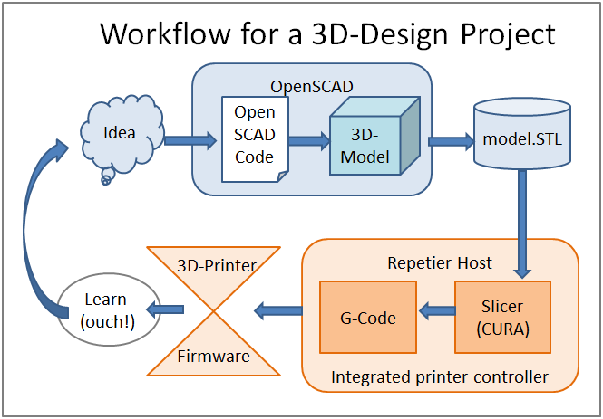

Lets talk about: OpenSCAD¶
We can find the homepage here: http://www.openscad.org/
The maintainers of the website call their tool:
The Programmers Solid 3D CAD Modeller
But I decided to call it Parametric Design to not chase people away too early. The use of the language to describe a model is quite powerful, the Programming can be introduced later step-by-step.
Let’s declare: OpenSCAD is essentially a model description language with a 3D-rendering engine and a STL-code compiler.
The language and the 3D-rendering are demonstrated in the next part. STL-code is a data format to describe 3D-models. It is a standard format, that is used by almost all 3D-printing applications.
3D design tool chain¶
Script based modelling¶
Almost all other 3D design applications use some proprietary binary format to save their results. OpenSCAD uses plain text. A plain text format gives us some advantages.
Text-based design benefits¶
- Direct control of all parameters
- The code can be commented
- Code can be versioned and reviewed (GIT Version Control)
- Easy sharing and reuse of designs (also partial)
- exact and repeatable results
OpenSCAD Advantages¶
- Its open source and its free.
- It runs on Windows, Mac amd Linux
- Powerful libraries (e.g. tooth-wheel)
- Active community of developers and users
- Many examples and tutorials online.
It simply works. You can get your first results in minutes.
Lets get to the Examples